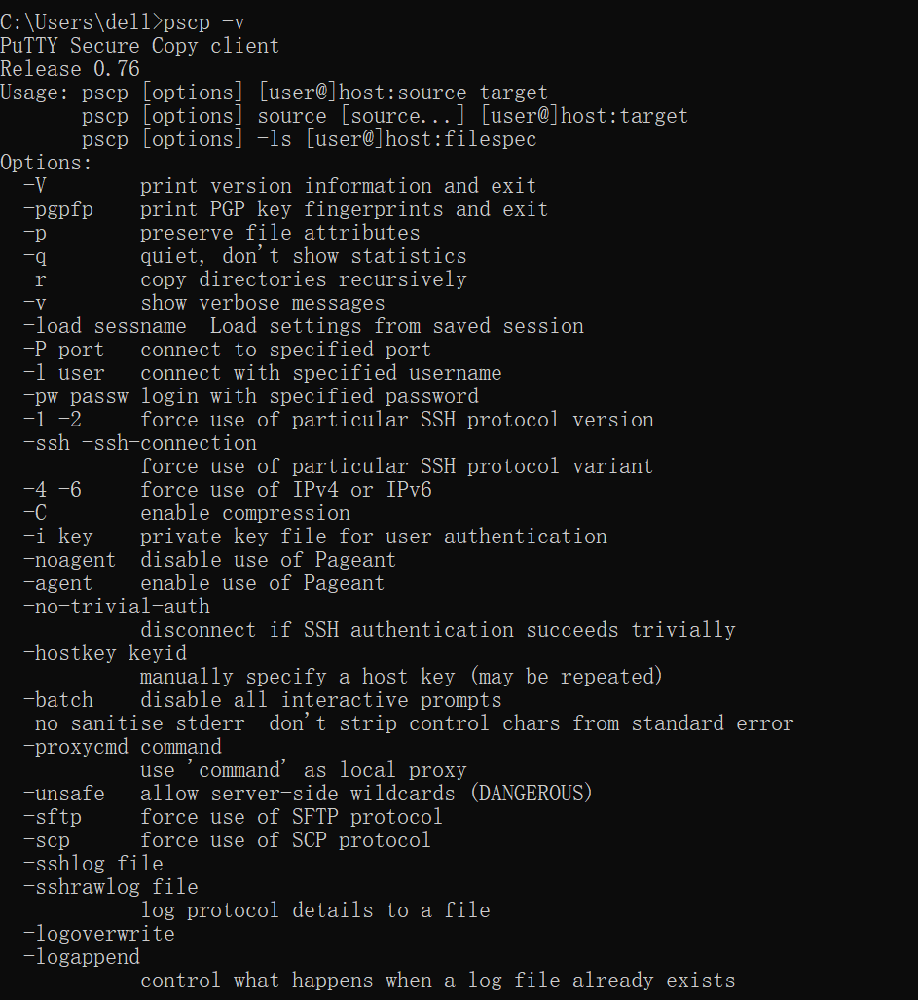
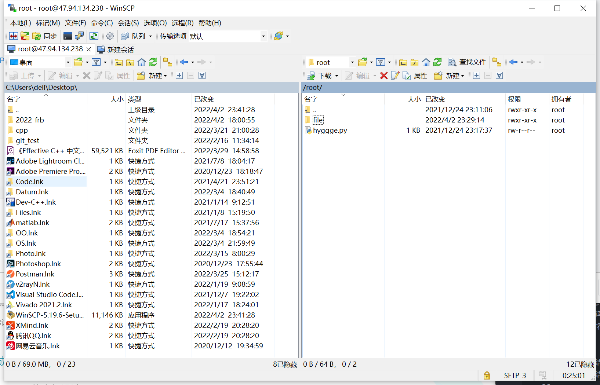

本篇博客介绍一下如何使用pscp在本地（Windows）和ECS服务器之间进行文件传输，以及如何在服务器中建立新终端。
前言
今天想把OO第一次作业的自动评测程序放到在阿里云ECS服务器上运行，以减轻笔记本CPU的压力（避免过早更换电脑）。但是理想很丰满，现实很骨感，在一开始便遇到了两个问题——
- 如何将本地的文件传到服务器上？
- 如何使程序在服务器后台运行？（一旦关闭服务器前端网页，在当前终端中运行的程序会被中断）
通过查找资料和请教同学，最终让我找到了解决方案，用本篇博客记录一下。
文件的传输
ECS服务器和本地进行文件传输的方法有很多，主要有以下几种——
- 使用Windows中自带的“远程桌面连接”
- 通过QQ软件，邮箱等第三方工具进行间接传输
- pscp
前两种方法相对比较复杂，第三种较为简单，只需要安装pscp软件，即可在cmd中通过命令实现两者之间的文件传输。
软件的安装
在一般情况下，pscp会和putty软件捆绑安装，我们可以直接在putty的安装目录下找到pscp.exe文件。此外，我们还可以在putty官网中单独下载pscp(下载地址)。
接下来，我们需要将pscp.exe文件放在 C:\Windows\system32\路径下。然后在命令行中运行命令pscp,如果终端有以下输出，就说明pscp配置成功了。

接下来，我们就可以快乐地通过命令行使用pscp了。（所以是不是很简单？
常用命令
只需要掌握以下pscp命令，即可实现一般的文件传输需求
将本地文件复制到服务器
1 | pscp [file_path] [ECS_user_name]@[ECS_ip]:[target_path] |
如果想把桌面上的test.txt传到服务器root/file文件夹下，命令可以写为
1 | pscp C:\Users\dell\Desktop\test.txt root@10.10.10.10:/root/file/ |
将本地文件夹和文件夹下的文件复制到服务器
只需要在pscp后面加入-r即可
1 | pscp -r [dir_path] [ECS_user_name]@[ECS_ip]:[target_path] |
如果想把桌面上的test文件夹传到服务器root/file文件夹下，命令可以写为
1 | pscp -r C:\Users\dell\Desktop\test root@10.10.10.10:/root/file/ |
将远程服务器中的文件复制到本地
1 | pscp [ECS_user_name]@[ECS_ip] [ECS_file_path] [targt_path] |
如果想把服务器root/file文件夹中test.txt传到本地desktop上，命令可以写为
1 | pscp root@10.10.10.10:/root/file/test.txt C:\Users\dell\Desktop\ |
将远程服务器中的文件夹和文件夹下的文件复制到本地
同样，只需要在pscp后面加入-r即可
1 | pscp -r [ECS_user_name]@[ECS_ip] [ECS_file_path] [targt_path] |
如果想把服务器root/file文件夹传到本地desktop上，命令可以写为
1 | pscp -r root@10.10.10.10:/root/file/ C:\Users\dell\Desktop\ |
补充：后来我又发现了一个有UI界面的文件传输软件——WinSCP（下载地址）这个软件可以直接通过鼠标拖动来复制文件，比命令行快太多了，效果如下图所示。

建立新终端
为了使程序能够在服务器后台运行，我们可以先建立一个新终端，在这个新终端下运行我们的程序，然后暂时退出该终端即可。这样，即使服务器前端网页关闭，我们建立的新终端也不会被中断，我们的程序也会正常运行。常用命令如下——
- 建立新终端
screen -S [terminal_name] - 暂时退出新终端
Ctrl+A+D - 查看已经创建的终端
screen -ls - 进入已创建的终端
screen -r [terminal_id](中端的id可以在screen -ls中看到) - 关闭新终端
exit
如果shell提示screen命令不存在，可以输入下面的命令进行安装
1 | //第一种方法 |
If you like this blog or find it useful for you, you are welcome to comment on it. You are also welcome to share this blog, so that more people can participate in it. If the images used in the blog infringe your copyright, please contact the author to delete them. Thank you !